Use-case: Data Integration
use_case_integration.RmdSet up a basic environment
# Create the background
background <- terra::rast(nrows=100, ncols=100, nlyrs=1, xmin=-1.5, xmax=0,
ymin=53, ymax=54,crs = "epsg:4326")
values(background) <- 0
# Create the simulation object
sim_obj <- SimulationObject(background = background)
# Simulate the environment state
sim_obj <- sim_state_env(sim_obj, fun = state_env_gradient, from = 0, to = 1)
# Define the target suitability function
state_target_suitability_example <- function(sim_obj){
out <- sim_obj@state_env * 2
out[out > 1] <- 2 - out[out > 1]
out <- out/2
names(out) <- "frog"
out # optimal environment is 0.5
}
# Apply the target suitability function
sim_obj <- sim_state_target_suitability(sim_obj, state_target_suitability_example)
# Realise the state
sim_obj <- sim_state_target_realise(sim_obj, fun = state_target_realise_binomial)Sampling Method 1: Point-Based Citizen Science
Point-based citizen science sampling involves volunteers (citizen scientists) collecting data at specific point locations within the study area. In this simulation, we model the effort and data collection process of citizen scientists who visit multiple locations to observe and report on target species. This approach captures the variability and potential biases introduced by non-professional samplers who might have varying levels of expertise and motivation.
In the following R code, we simulate the effort and data extraction process for point-based citizen science sampling. We use the sim_effort function to allocate sampling effort, specifying the number of samplers and the number of visits each sampler makes. We then use the sim_extract function to extract the simulated environmental and target data at the sampling points. Finally, we plot the resulting simulation object to visualize the sampling effort and observed data.
sim_obj_cit_sci <-
sim_effort(sim_obj,effort_basic,n_samplers = 30,n_visits = 10) |>
sim_detect()
plot(sim_obj_cit_sci) 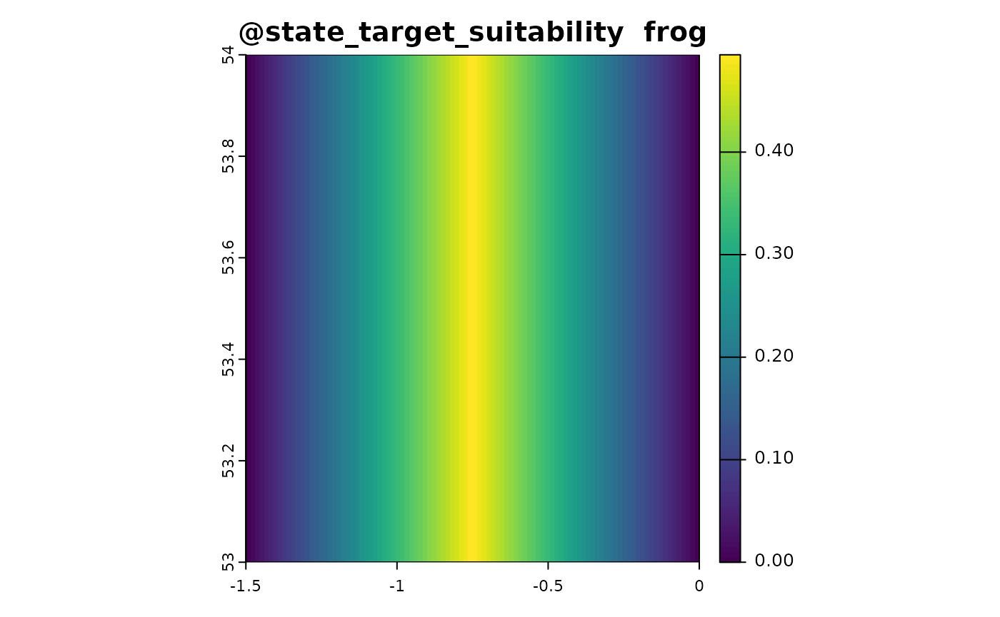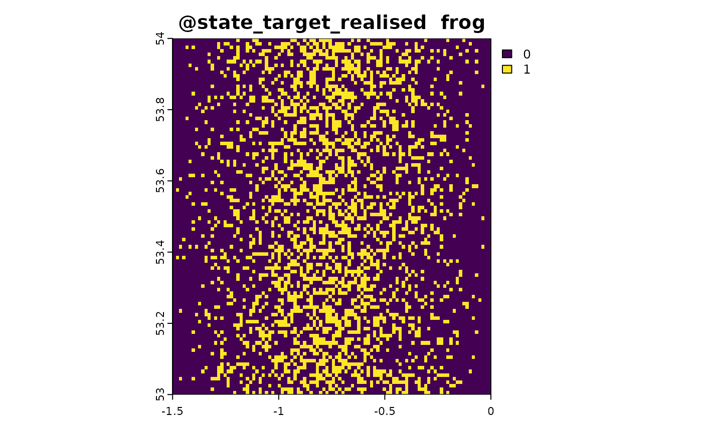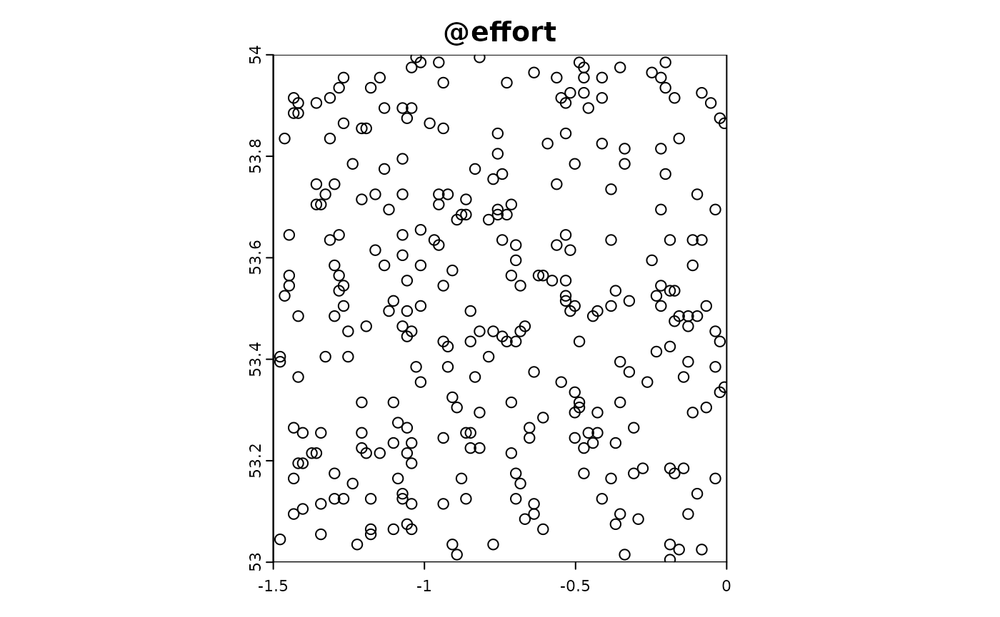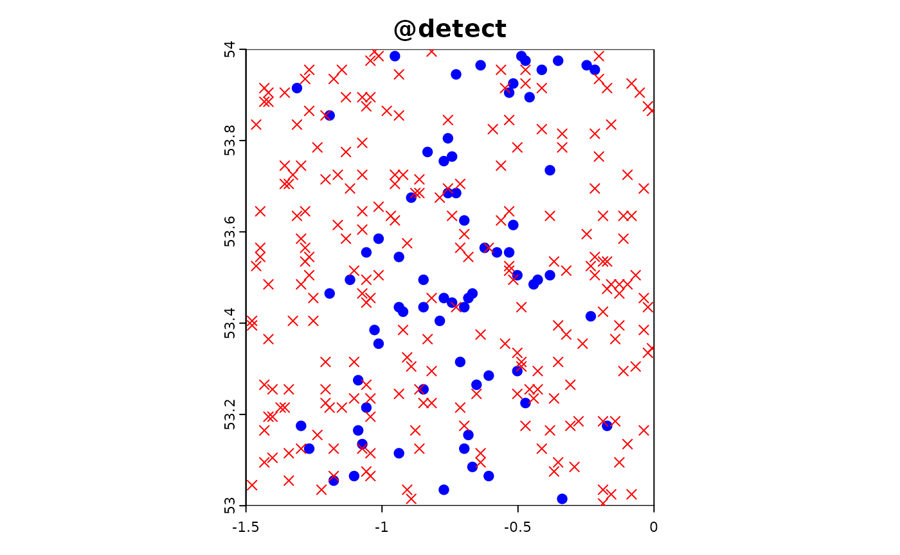
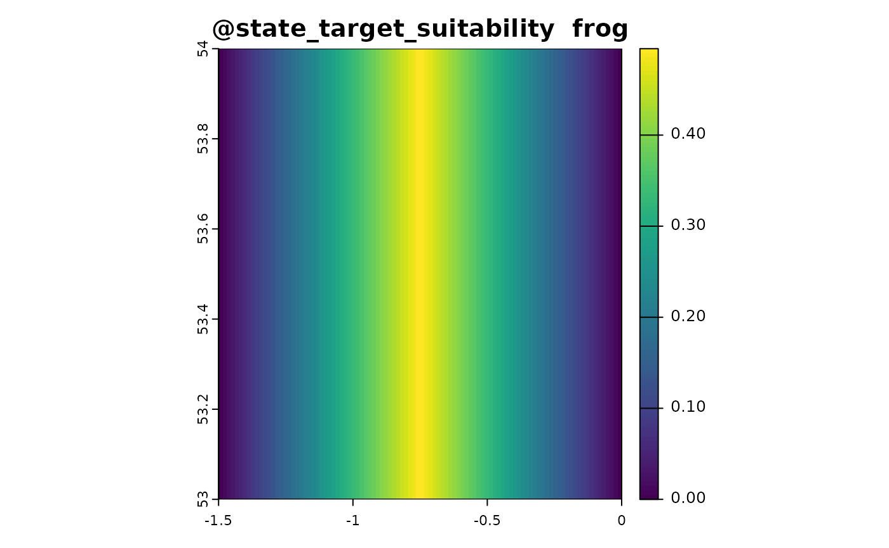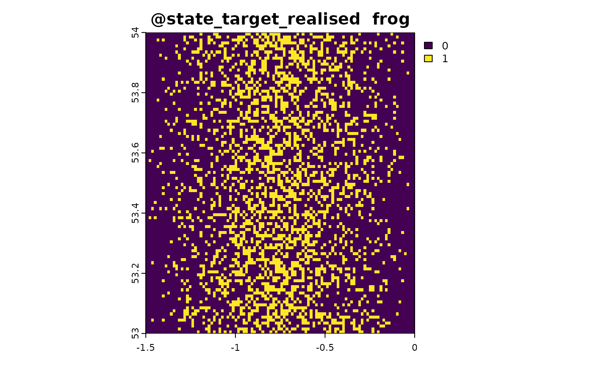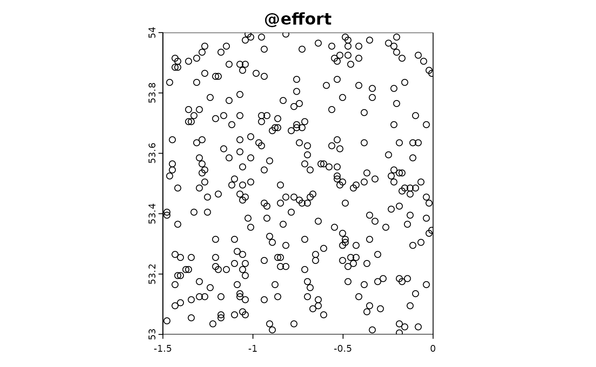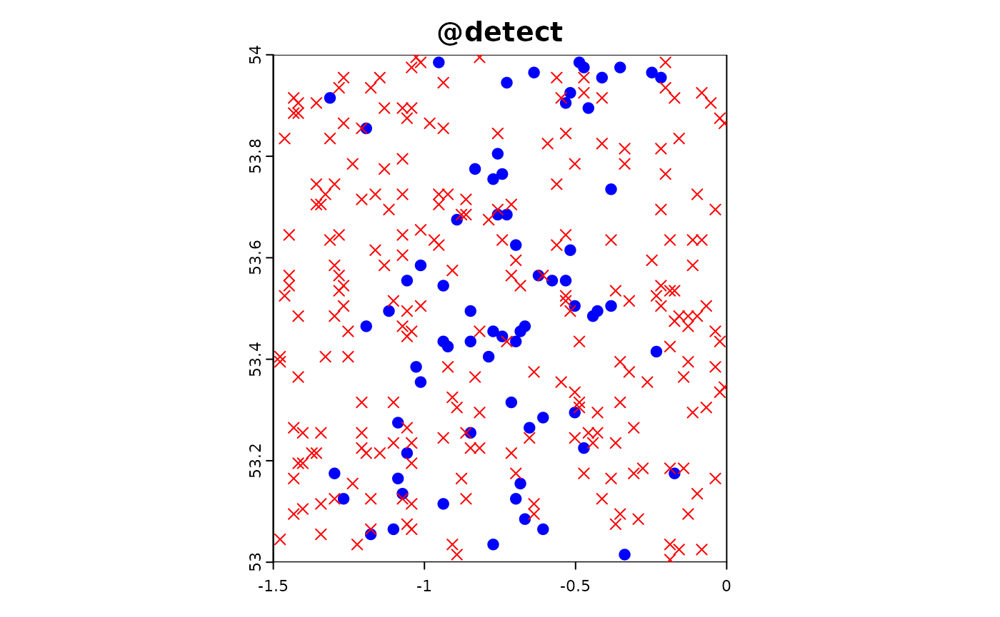
Sampling Method 2: Transects
Transect sampling involves systematically sampling along lines (transects) across the study area. This method is often used in ecological studies to provide a structured and repeatable way to collect data across gradients or to cover large areas efficiently. In this simulation, we model the effort and data collection process along transects, where each transect consists of a series of points sampled at regular intervals.
In the following R code, we simulate transect-based sampling effort. The sim_effort_transect function generates random transects by defining starting points and orientations within the study area. For each transect, a series of sampling points are created along the transect line. The sim_extract function then extracts the simulated environmental and target data at these sampling points. Finally, we plot the resulting simulation object to visualize the transect sampling effort and observed data.
sim_effort_transect <- function(sim_obj, n_transects, n_transect_points, transect_length) {
# Extract background information
background <- sim_obj@background
extent <- terra::ext(background)
# Create empty data frame to store effort
transects <- data.frame()
for (i in 1:n_transects) {
# Generate random starting point for the transect within the extent
start_x <- runif(1, min = extent[1], max = extent[2])
start_y <- runif(1, min = extent[3], max = extent[4])
# Generate random angle for the transect
angle <- runif(1, 0, 360)
# Calculate end point of the transect
end_x <- start_x + transect_length * cos(angle * pi / 180)
end_y <- start_y + transect_length * sin(angle * pi / 180)
# Create a sequence of sample points along the transect
sample_points <- st_sfc()
for (j in seq(0, 1, length.out = n_transect_points)) {
sample_x <- start_x + j * (end_x - start_x)
sample_y <- start_y + j * (end_y - start_y)
sample_points <- st_union(sample_points, st_point(c(sample_x, sample_y)))
}
# Combine into an sf object
transect <- st_sf(
sampler = i,
transect_points = 1:n_transect_points,
unit = 1,
geometry = sample_points,
crs = st_crs(background),
row.names = 1:n_transect_points
) |> st_cast("LINESTRING")
# Append to effort data frame
transects <- rbind(transects,transect)
}
transects
}
sim_obj_transect <-
sim_effort(sim_obj,sim_effort_transect,n_transects = 40,n_transect_points = 2,transect_length =0.1) |>
sim_detect(realised_extract_fun = max)
plot(sim_obj_transect) 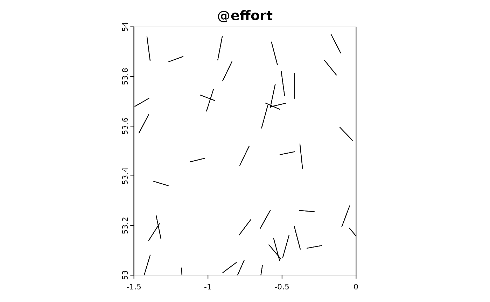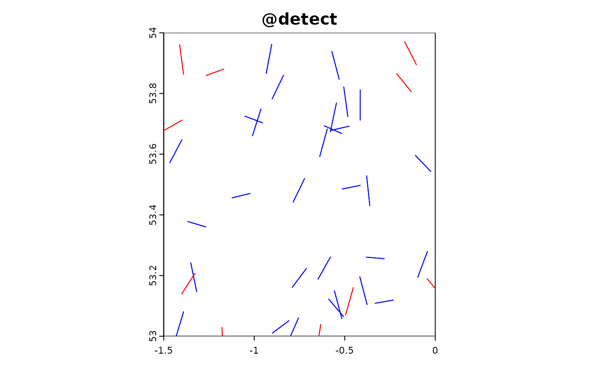
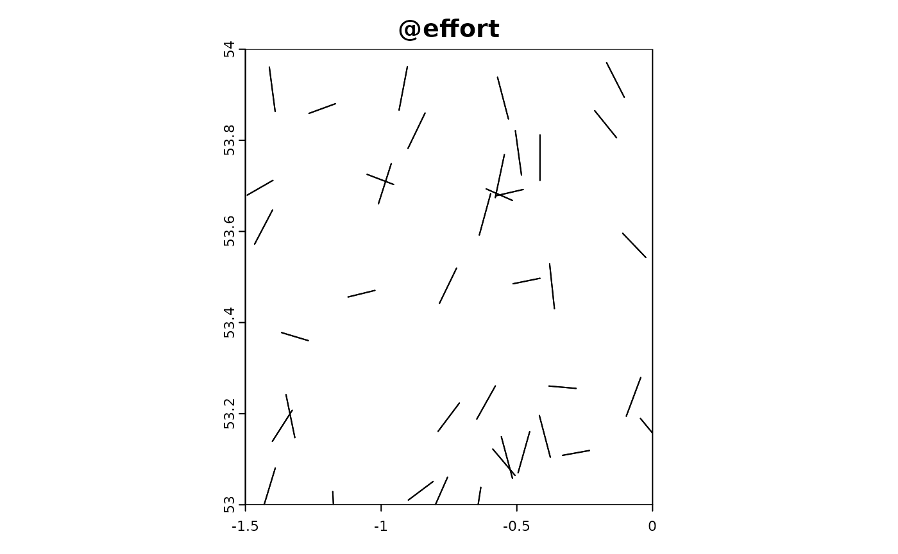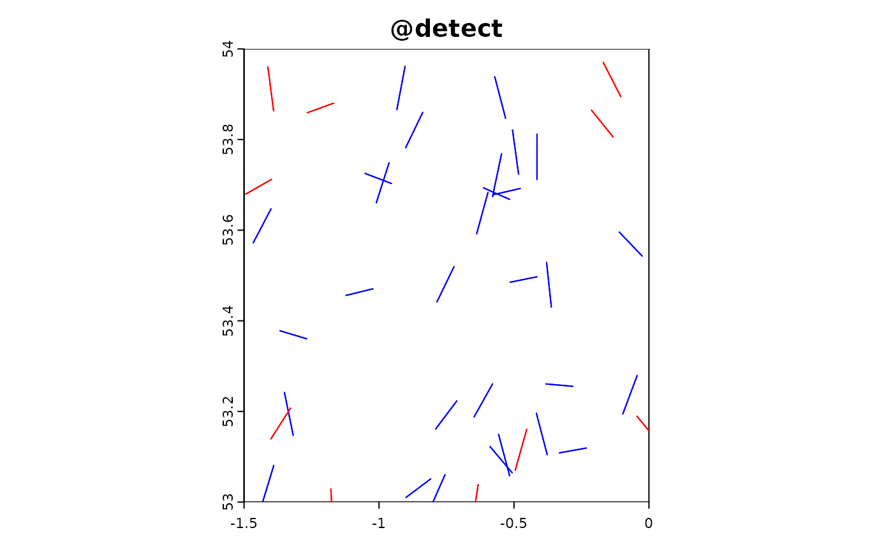
Sampling Method 3: Sites
Site-based sampling involves dividing the study area into distinct, predefined areas (sites) and collecting data within these boundaries. In this simulation, we use polygonal (square) sites to model the effort and data collection process. This method is useful for ensuring that data collection covers the entire study area uniformly and can be particularly effective for habitat or landscape-level studies.
In the following R code, we simulate site-based sampling effort using square polygons. The sim_effort_polygons function generates a specified number of square polygons (sites) within the study area, with each site having a predefined size. The sim_extract function then extracts the simulated environmental and target data within these polygons.
# Custom function for simulating polygon (square) surveys
sim_effort_polygons <- function(sim_obj, n_polygons, polygon_size) {
# Extract background information
background <- sim_obj@background
extent <- terra::ext(background)
# Create an empty list to store effort data
effort_list <- list()
for (i in 1:n_polygons) {
# Generate random bottom-left corner for the square within the extent
start_x <- runif(1, min = extent[1], max = extent[2] - polygon_size)
start_y <- runif(1, min = extent[3], max = extent[4] - polygon_size)
# Define the corners of the square polygon
coords <- matrix(c(
start_x, start_y,
start_x + polygon_size, start_y,
start_x + polygon_size, start_y + polygon_size,
start_x, start_y + polygon_size,
start_x, start_y
), ncol = 2, byrow = TRUE)
# Create the polygon
polygon <- st_polygon(list(coords))
polygon_sf <- st_sf(
sampler = i,
geometry = st_sfc(polygon, crs = st_crs(background))
)
# Append to effort list
effort_list[[i]] <- polygon_sf
}
# Combine all polygons into a single sf object
do.call(rbind, effort_list)
}
sim_obj_polygons <-
sim_effort(sim_obj,sim_effort_polygons,n_polygons = 30,polygon_size = 0.05) |>
sim_detect(realised_extract_fun = max)
plot(sim_obj_polygons)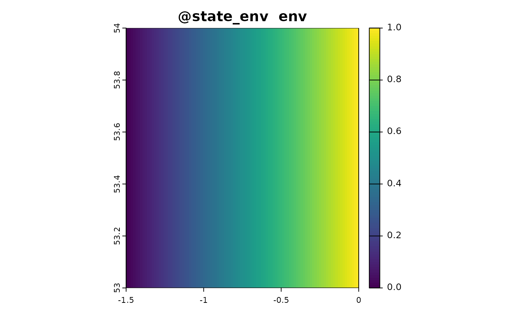
 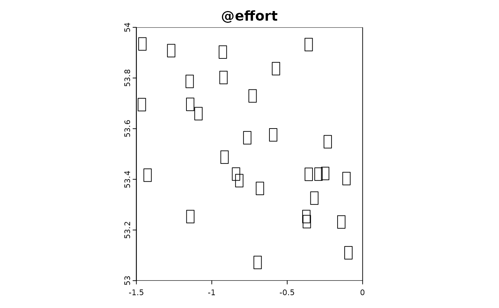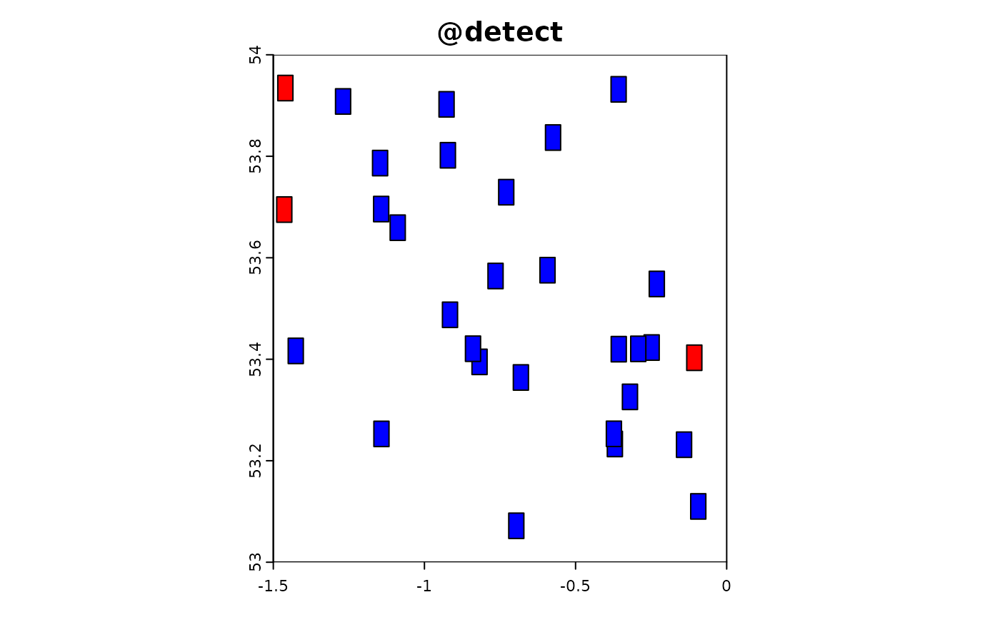
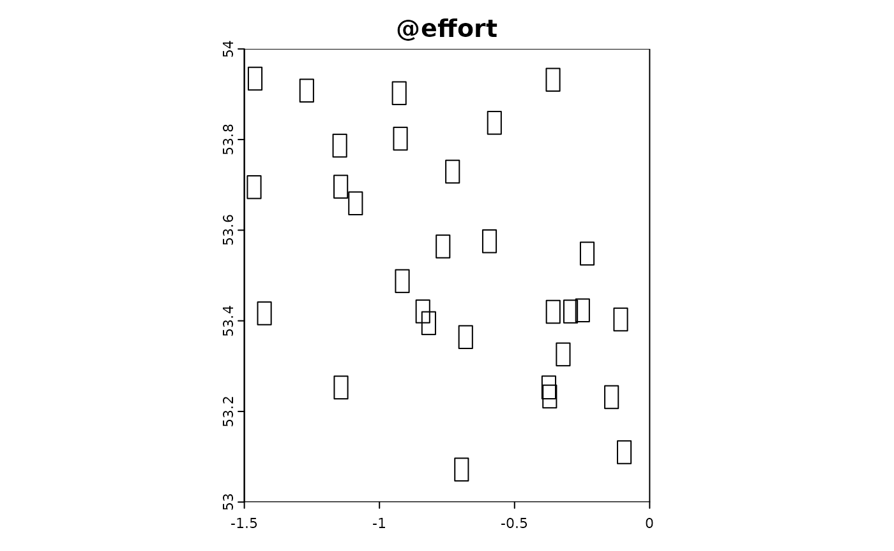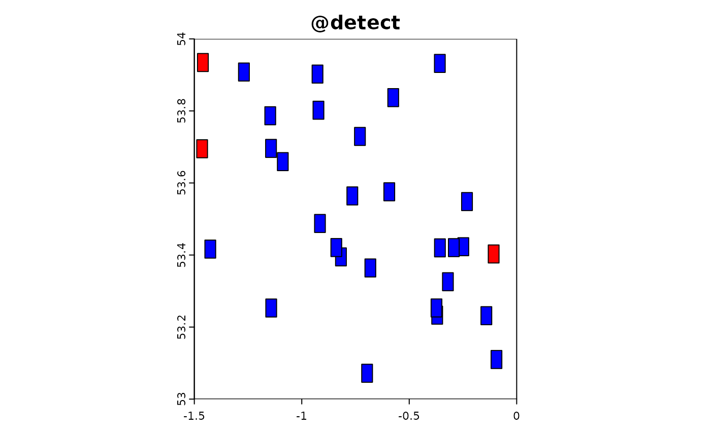
Data integration
Here we attempt to do some data integration using the R package ibis.iSDM
This doesn’t work for some reason
#https://github.com/iiasa/ibis.iSDM
#remotes::install_github("IIASA/ibis.iSDM")
library(ibis.iSDM)
test_data <- sim_obj_cit_sci@detect
mod <- distribution(sim_obj@background) |>
add_predictors(env = sim_obj@state_env,
transform = "scale",
derivates = "none") |>
add_biodiversity_poipa(test_data,
name = "Citizen sci data",
field_occurrence = "target_detected") |>
engine_glm() |>
train(runname = "test_run",
verbose = T,
aggregate_observations = F)